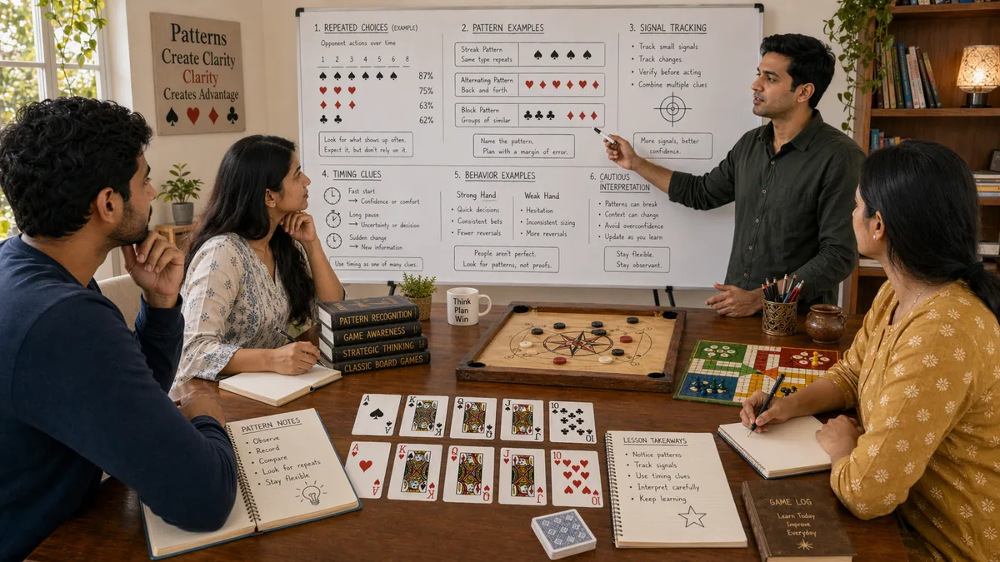

Introduction
Desi Game Pattern Recognition matters because pattern recognition shapes how readers interpret pressure, timing, and trade-offs inside traditional South Asian games. A page like this is most useful when it explains not only what to do, but why a choice becomes stronger or weaker as the situation changes.
This guide keeps the explanation practical. It shows how pattern recognition connects to board position, card order, turn rhythm, tempo shifts, and trade-offs between safety and initiative, where beginners usually misread the situation, and how to turn the idea into a repeatable habit.
The article is also written for human readability, not just keyword coverage. Instead of relying on thin summaries, it explains the reasoning behind stronger choices, the trade-offs behind weaker ones, and the kinds of examples readers can recognize from their own sessions.
Overview

What Is Pattern Recognition?
Pattern recognition is the practice of handling one important layer of traditional South Asian games in a more deliberate way. It becomes useful when players stop reacting only to the last move and start looking at context, options, and consequences. In practical terms, it helps readers judge when a line is solid, when it is thin, and when it only looks attractive on the surface.
A readable guide should make that judgment easier. It should show how the topic appears in ordinary positions, how it affects later decisions, and why small differences in context can change the best response.
1. Look for Repetition With Context
Pattern recognition is not about spotting anything that repeats once or twice. It is about noticing meaningful repetition inside a believable context. The same action can mean different things depending on timing and pressure.
A section about look for repetition with context helps readers understand that patterns do not need to be perfect to be useful. The goal is to narrow the next decision, not to pretend every repeated signal is certain.
One helpful application is to treat look for repetition with context as a working note rather than as a final conclusion. That way readers can update naturally as more information arrives and avoid over-reading thin evidence.
2. Separate Habit From Noise
A reliable pattern usually appears across several similar moments. Noise appears random or disappears as soon as the situation changes. Strong readers stay cautious until the pattern has enough support.
A section about separate habit from noise helps readers understand that patterns do not need to be perfect to be useful. The goal is to narrow the next decision, not to pretend every repeated signal is certain.
One helpful application is to treat separate habit from noise as a working note rather than as a final conclusion. That way readers can update naturally as more information arrives and avoid over-reading thin evidence.
3. Use Patterns to Narrow Options
The goal of pattern recognition is not perfect certainty. It is to narrow the most likely explanations so the next decision becomes cleaner. That makes patterns useful even when they are incomplete.
A section about use patterns to narrow options helps readers understand that patterns do not need to be perfect to be useful. The goal is to narrow the next decision, not to pretend every repeated signal is certain.
One helpful application is to treat use patterns to narrow options as a working note rather than as a final conclusion. That way readers can update naturally as more information arrives and avoid over-reading thin evidence.
4. Notice Your Own Patterns Too
Readers often focus on opponent habits and forget their own. Repeated lines, repeated timing, or repeated emotional responses make a player easier to read. Self-awareness matters as much as outward observation.
A section about notice your own patterns too helps readers understand that patterns do not need to be perfect to be useful. The goal is to narrow the next decision, not to pretend every repeated signal is certain.
One helpful application is to treat notice your own patterns too as a working note rather than as a final conclusion. That way readers can update naturally as more information arrives and avoid over-reading thin evidence.
5. Match the Pattern to the Stakes
Not every pattern deserves the same response. Small patterns can justify small adjustments. Bigger strategic shifts need stronger evidence, especially in positions where the downside of a wrong read is expensive.
A section about match the pattern to the stakes helps readers understand that patterns do not need to be perfect to be useful. The goal is to narrow the next decision, not to pretend every repeated signal is certain.
One helpful application is to treat match the pattern to the stakes as a working note rather than as a final conclusion. That way readers can update naturally as more information arrives and avoid over-reading thin evidence.
6. Update Instead of Forcing the Read
A pattern page should encourage flexible thinking. If new information weakens the original read, update it. The goal is not to prove the first impression correct but to stay aligned with reality.
A section about update instead of forcing the read helps readers understand that patterns do not need to be perfect to be useful. The goal is to narrow the next decision, not to pretend every repeated signal is certain.
One helpful application is to treat update instead of forcing the read as a working note rather than as a final conclusion. That way readers can update naturally as more information arrives and avoid over-reading thin evidence.
7. Practice Through Examples
Pattern work improves through examples that feel realistic: repeated caution near the finish, repeated aggression after one success, or repeated overcorrection after a mistake. These are the patterns readers can recognize in real sessions.
A section about practice through examples helps readers understand that patterns do not need to be perfect to be useful. The goal is to narrow the next decision, not to pretend every repeated signal is certain.
One helpful application is to treat practice through examples as a working note rather than as a final conclusion. That way readers can update naturally as more information arrives and avoid over-reading thin evidence.
8. Turn Recognition Into Better Timing
The practical reward of pattern recognition is timing. It helps readers know when to press, when to wait, and when to stop trusting a line that has become too readable.
A section about turn recognition into better timing helps readers understand that patterns do not need to be perfect to be useful. The goal is to narrow the next decision, not to pretend every repeated signal is certain.
One helpful application is to treat turn recognition into better timing as a working note rather than as a final conclusion. That way readers can update naturally as more information arrives and avoid over-reading thin evidence.
Common Mistakes
- Forcing a pattern onto random variation.
- Failing to update the read when new evidence weakens it.
- Treating a single success as proof that the same line is always correct.
- Reacting to pressure before checking whether the position actually changed.
- Reviewing the outcome without reviewing the quality of the reasoning.
Summary
The most practical way to improve pattern recognition is to treat it as a repeatable habit rather than as a special trick. In traditional South Asian games, readers gain more from calm observation and consistent routines than from dramatic one-off plays. The strongest takeaway is to connect every idea back to context, trade-offs, and what the next decision will look like.
That balance is what keeps the page search-friendly without making it feel artificial. The keyword belongs in the article because it matches the topic, but the real value comes from clear reasoning, realistic examples, and language that a reader can stay with from beginning to end.